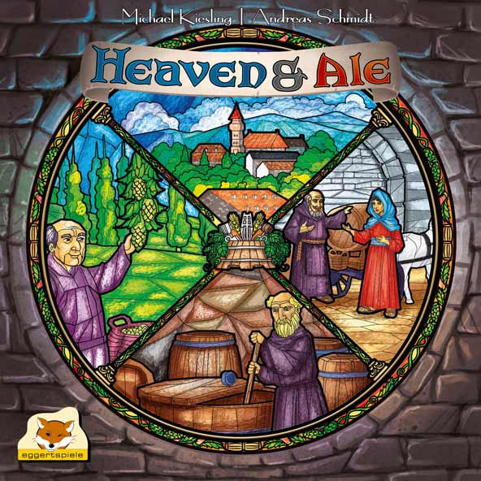
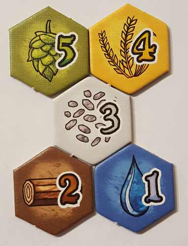
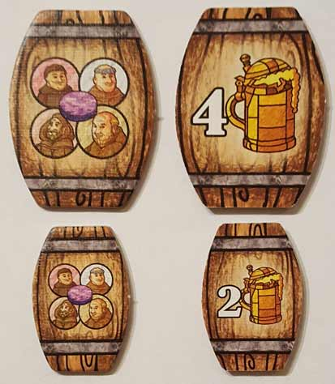
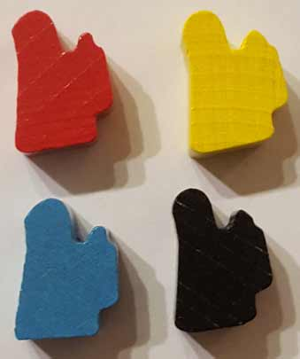
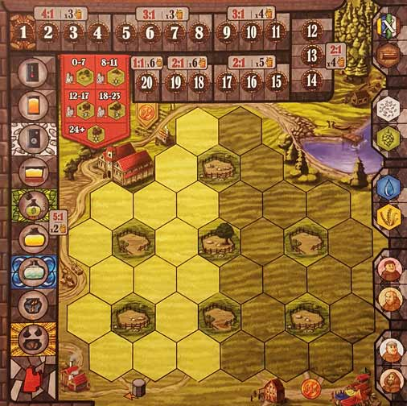
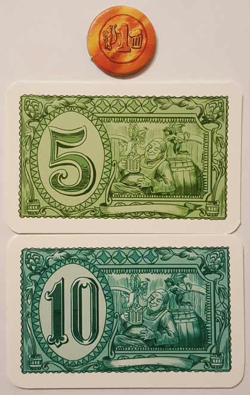
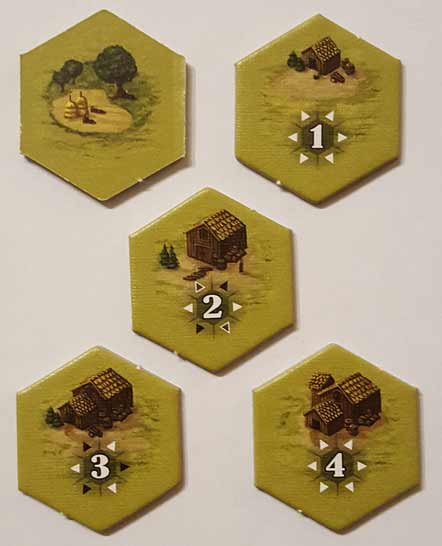
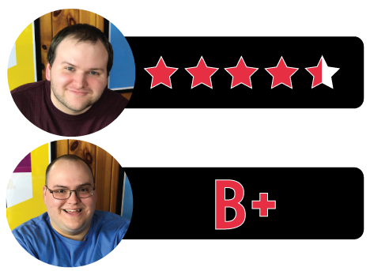

In this Heaven & Ale review, D and Will analyze the award nominated, beer brewing-themed board game from designers Michael Kiesling and Andreas Schmidt. Published by Eggertspiele, Heaven & Ale has its players taking on the roles of monks who tend to their respective gardens and compete in creating the best beer. In order to win, players have to navigate a multitude of mechanics and mechanisms over the course of a handful of rounds. For more on what this game has to offer, continue reading below.

D reviews Heaven & Ale
 (Author’s
note: this review is meant to accompany our gameplay video and will not
go in-depth on the game’s rules. If you’re interested in learning how
the game is played, please watch the video. It’s not bad.)
(Author’s
note: this review is meant to accompany our gameplay video and will not
go in-depth on the game’s rules. If you’re interested in learning how
the game is played, please watch the video. It’s not bad.)
The worst part of playing almost every board game is the setup and cleanup. It’s a drag. If I were filthy rich and had lots of money to throw around, I don’t think I’d hire a butler, but I would probably hire someone just to setup and cleanup the board games I want to play. Sadly, I’m not filthy rich (yet), so I’m forced to do all that busy work myself. As a result, there are a handful of games that I prefer not to play just because I don’t think they’re fun enough to deal with the mess. Small World is a good example. It’s a pretty fun game, but it also has about a million pieces that all have assigned spots in the box and, frankly, that’s more than I want to deal with. Every once in a while though, I’ll come across a game that is worth all the trouble of setting it up and putting it away, and Heaven & Ale is a good example of such a game. There are a lot of components packed inside the box, and plenty of organization is required for a quicker setup on future plays, but Heaven & Ale is an awe-inspiring example of board game design that any enthusiast should try to get their hands on.
I don’t use a term like “awe-inspiring” lightly. When it comes to most board games, even when I recognize that a game is well-designed or does something clever, I can sort of understand how the designer(s) came up with what they did. Not so for Heaven & Ale. There are a lot of systems at play here, and as far as I can tell, they all work pretty much perfectly together to make a tense and fun gaming experience. How Michael Kiesling and Andreas Schmidt thought up some of the game’s mechanics is completely beyond me. I assume they see board game pieces like Russell Crowe’s character saw numbers in A Beautiful Mind. The endgame scoring system is particularly beautiful. It’s complex, yes, but it also makes perfect sense from a thematic standpoint and gels perfectly with the gameplay that precedes it. You’re brewing beer, so naturally the best ingredients will be offset by your worst ones and vice/versa, but the skill of your “brewmaster” can help mitigate the difference. It’s genius stuff, although it’s likely to leave some people confused about strategy, at least at first.
Everything that comes before the scoring is a really difficult balancing act. Struggles exist between focusing on money vs. resources, resources vs. monks, which individual resources to favor and when to score them, etc. You never really feel comfortable when playing Heaven & Ale because there are so many things to worry about and it’s almost impossible to not have some part of your brew lagging behind. Likewise, it’s difficult for a player to build a commanding lead on their opponents, so looking over at their progress is usually a worrying experience. Brewing actual beer in medieval Europe might have been a less stressful and delicate operation.
The components of Heaven & Ale are all well-made and the art, courtesy of Christian Fiore, is excellent. It’s not necessarily the most beautiful game I’ve ever played (although the box art is awesome), but it does a good job of evoking the time period and setting of the game, which I think is more important. The player boards are noteworthy for their good use of space, managing to sprinkle in little tips and reminders for anyone who is paying attention. And perhaps best of all, the game comes packaged with enough plastic baggies to easily store each group of components separately in the box. It’s obvious that a lot of thought and effort went into the design and production of this game, and it has paid off immensely. A couple of small, number-related things left me with questions, and I wouldn’t necessarily be opposed to trying this game again with a couple of personal tweaks, but overall, I have no major complaints regarding Heaven & Ale. Well, aside from the setup and cleanup. Otherwise, it’s a remarkable game.
D’s Rating: Four and One-Half Stars out of Five.
Will reviews Heaven & Ale
 Heaven & Ale is
kind of insane. I know that may seem like a hyperbolic and vague way to
start a review, but it’s definitely appropriate. Its mechanics, of
which there are many, are insane, its approach to theme is insane – it’s
just insane, but in a good way. As someone who hopes to break into game
design someday, games like Heaven & Ale awe me. How
designers Michael Kiesling and Andreas Schmidt balanced the numerous
mechanics against the ale-brewing theme is beyond my understanding. Some
of the design is abstract as well – it’s actually kind of a mess at
times too. I usually hate mechanic ridden, convoluted board games, but
when it comes to Heaven & Ale, I simply want to play it more.
Heaven & Ale is
kind of insane. I know that may seem like a hyperbolic and vague way to
start a review, but it’s definitely appropriate. Its mechanics, of
which there are many, are insane, its approach to theme is insane – it’s
just insane, but in a good way. As someone who hopes to break into game
design someday, games like Heaven & Ale awe me. How
designers Michael Kiesling and Andreas Schmidt balanced the numerous
mechanics against the ale-brewing theme is beyond my understanding. Some
of the design is abstract as well – it’s actually kind of a mess at
times too. I usually hate mechanic ridden, convoluted board games, but
when it comes to Heaven & Ale, I simply want to play it more.
Starting with the components, I would say that they’re very good. I didn’t feel this game was overpriced or overproduced in anyway. The cardboard and cardstock are sturdy, and the color scheme is appropriately muted but still arresting. Also, I really like the artwork, which matches the theme and Euro-style mechanics. Truly, the art really transports me to a garden somewhere in Germany (or Belgium) where monks till the crops and brew beer. I really love games that stimulate my imagination like this.
As impressive as the art and components are, the gameplay blows me away even more. I could probably write fifteen paragraphs detailing my feelings on each individual rule or mechanic, but obviously that’s not practical. At its core, Heaven & Ale is a game in which you collect resources and workers, in this case ingredients and monks, and place them on your board in a way that allows you to earn the most money (ducats) and upgrades. You get your own board to work with, in addition to the main board, and that means that you’ll be playing your own game within the even bigger game. This is all very Euro, but it’s done in a way that I find more satisfying than most of the other Euros I’ve played.
Almost every design decision in Heaven & Ale was made to force you into a mindset of strategic thought and priority balancing. Take the player boards for instance, which are split into two halves – one that’s shady and one that’s sunny. You might be compelled to focus on the shady side early on, as that’s the side that allows you to accumulate more ducats and thus, more resources. And placing resources on the shady half doesn’t cost nearly as much as it does on the sunny one, so why not amass a fortune before going to the sunny side? Questions like these will rattle around your head for an entire session of this game – it’s so challenging and stimulating. And amazingly, that strategy might work in one game and fail in another. It all comes down to how well you balance your priorities, and that can only be learned through repeat sessions.
In fact, the more I think about Heaven & Ale’s mechanics, the more I notice a quasi push-your-luck presence in them. After all, as your circling around the main board, picking up resources and monks or activating them, you can move as much or as little as you want. You might be in a position where you really need a hops tile, but it’s six spots ahead. That’s quite a jump, but if you don’t do it, someone else might. And then if you do do it, you may end up leapfrogging a scoring token that you actually really needed. Was it worth it? Maybe. Maybe not, but it’s definitely frustratingly amusing to find out. You would think that moments like the one I just described might slow the game down too much, but in my experience, it somehow doesn’t. I guess that’s because there are almost always ways to adapt and move on, which is nice because it keeps sessions of Heaven & Ale from ever becoming too bogged down or heated.
When you finally reach the endgame, you’ll probably be a little mentally exhausted. But that’s okay because there’s only a boatload more thinking left to do. I’ve seen people go either way on the endgame scoring, and I can honestly say, I understand the viewpoint of those who hate it. However, I personally like it for a number of reasons – mainly that it makes sense thematically. I don’t want to explain the scoring because that would take forever, so to summarize, you’re only as successful as your weakest resource and your brewmaster. Say for instance that you produced a lot of water but very little yeast and barley, do you think that would make a satisfying ale? Maybe if you like Natty Ice, but in truth, that would make a crap beer. In real life, you want to find the perfect balance of ingredients, and Heaven & Ale’s scoring symbolizes this. It’s brilliant design but more importantly, thematically appropriate.
Sure, this game isn’t always on point thematically. The shady versus sunny board mechanic is mechanically useful but thematically abstract. Earning bonuses for completing certain objectives or activating certain resources is also mechanically convenient but makes little sense thematically. I give Heaven & Ale a pass here because for the most part, the theme is respected and represented. My biggest complaint in regards to this game is that there’s often too much to remember. It’s hard to remember the barrel bonuses when you’re trying to move your resources and brewmaster up. It’s hard to remember you can forfeit a privilege card for money, even when you’re strapped for cash. Yes, experience will ease these issues, but even after multiple sessions, they still exist. And it doesn’t help that the rulebook uses similar terms like “activating” and “triggering” to describe the differing functions of the monk tiles. Those functions easily blur when you’re constantly strategizing about a dozen other things.
Despite the sheer amount of mechanics and mechanisms present here, Heaven & Ale is still fun. Sure there’s a ton to remember, but most gamers will know and accept that before ever playing. Some will appreciate the mechanics and how they relate to the theme; others will say the game is too quirky and push it aside. What I’m trying to say is, this game is not for everyone. But as I said earlier, I didn’t think I’d like it – I normally hate board games like this. In the end though, I found Heaven & Ale to be superbly designed and intellectually stimulating. Maybe one or two fewer mechanics would’ve polished the overall experience, but as it stands, this one is still first-rate.
I give Heaven & Ale a: B+
Heaven & Ale Review – Board Crazy’s Ratings

Leave a Reply
You must be logged in to post a comment.